Je pro nás velkou radostí, že s vámi budeme moci prožít náš svatební den v tak silných a krásných kulisách, jaké jen Neratov ukrytý v lesích Orlických hor nabízí. Mše svatá se svatebním obřadem bude slavena v sobotu 11. 10. 2025 ve 13 hodin v kostele Nanebevzetí Panny Marie, který je nejen dominantou Neratova, ale i vyhledávaným výletním místem turistů a poutníků z celé střední Evropy. Svatební veselí bude poté probíhat ve společenském domě U Proroka.
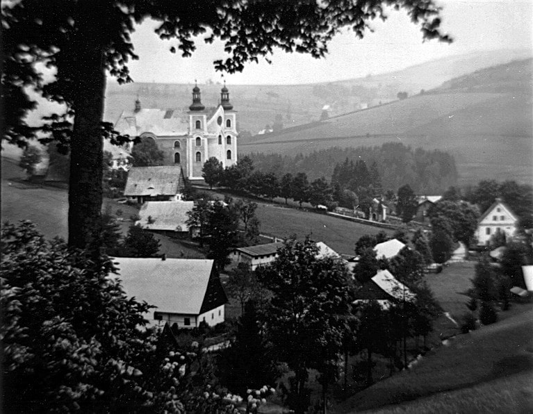13:00 – Svatební mše svatá
14:30 – Společné focení před kostelem
16:00 – Svatební hostina
18:30 – První tanec novomanželů
20:30 – Svatební kvíz
21:00 – Večerní raut
21:30 – Ľudová hudba Lukáše Zindlera a DJ
00:00 – Zavíjanka
01:00+ – Nekončící zábava
Abychom vám ve všem stran ubytování a stravy mohli vyjít vstříc, vyplňte prosím tento krátký svatební formulář. Prosíme, abyste tak udělali nejpozději do neděle 5.10.2025. Děkujeme všem za spolupráci!
Pro všechny hosty, kteří budou mít zájem, máme sjednáno ubytování.
Ubytování je pro vás připraveno ve společenském domě U Proroka v Neratově a na chatě U Rampušáka v nedalekých Bartošovicích v Orlických horách. Čas příjezdu, rozdělení do konkrétních pokojů a stravu s vámi budeme komunikovat jednotlivě.
Ubytování bude zabezpečeno na chatě Hanuška v Neratově hned u kostela. Z provozních důvodů chaty se budete moci začít ubytovávat nejdříve v 11:30, velmi vás tedy prosíme, abyste se dostavili včas.
Rozdělení do pokojů se dozvíte na místě od našeho manažera pro ubytování Martina Riečana. V případě nejasností či nesnází ho můžete v den ubytování kontaktovat na tel. č. +421 917 346 397 (ideálně volejte skrze WhatsApp).
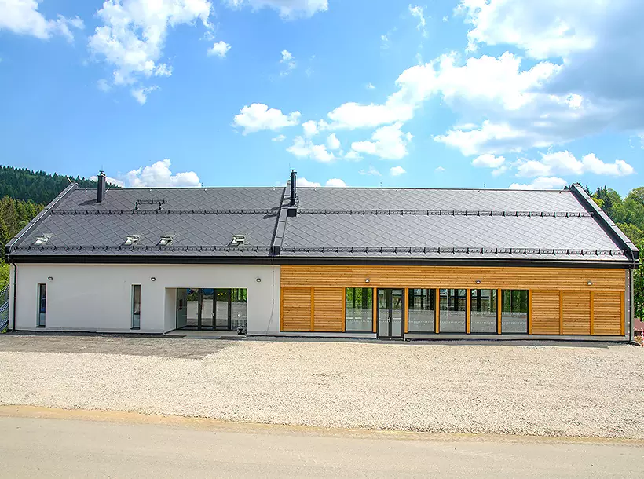 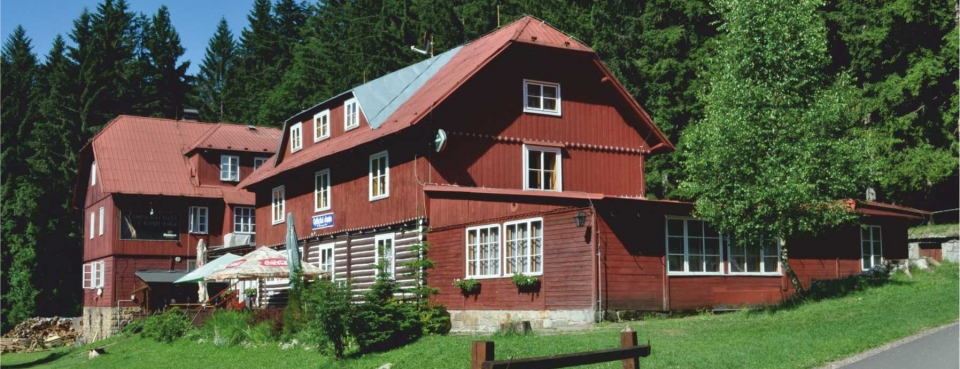 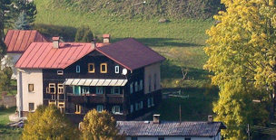Kvůli odlehlosti Neratova doporučujeme jako dopravu využití auta. Pokud byste snad vůz neměli k dispozici, nebo víte, že při cestě na svatbu budete mít volné místo pro spolujezdce, vyplňte prosím tento formulář nabídek a poptávek spolujízdy. Velmi děkujeme!
Parkování pro hosty ubytované v domě U Proroka a U Rampušáka se nachází v bezprostřední blízkosti ubytování. V případě chaty Hanuška, po vyložení zavazadel zaparkujte, prosím, na parkovišti vyznačeném v přiložené mapě. Kostel a svatební sál v domě U Proroka jsou v pohodlné docházkové vzdálenosti, auta již tedy nebudou potřeba.
V průběhu večera bude zejména pro hosty ubytované na chatě U Rampušáka připraven rozvoz. O ten se postará náš manažer pro dopravu, Jan Svoboda (tel. č. +420 774 741 191, opět ideálně skrze WhatsApp).
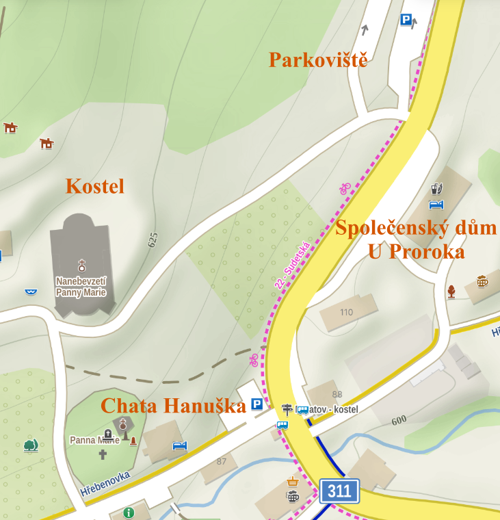Dopoledne nejspíš využijete na dopravu a přípravy, pokud byste snad ale dorazili dříve, můžete čas využít k procházce po krásném okolí. Ke kostelu se před obřadem prosím dostavte okolo 12:30, vydechnete, rozhlédnete se a za zvuku smyčců se usaďte v neratovském chrámu smíření.
Mše svatá se svatebním obřadem začne ve 13 hodin. Vzhledem k horskému prostředí a nastupujícímu podzimu zvazte teplé oblečení doplněné o deštníky. Po skončení mše svaté setrvejte v okolí kostela, neboť bude následovat společné focení. Poté se již odebereme do svatebního sálu U Proroka.
Od nedělní 8 hodiny ráno bude ve svatebním sále probíhat úklid a snídaně. Předání ubytovacích prostor musí proběhnout do 10 hodin, v té době mějte tedy své pokoje již vyklizené.
V 10 hodin taktéž začíná v neratovském kostele nedělní mše svatá, které se budete moci zúčastnit společně s námi.
Největším darem pro nás bude, že svatební den prožijeme právě s vámi. Pokud byste nás nicméně chtěli obdarovat i hmotně, budeme poctěni a vděčni za všechno. Nejlépe bychom však v budoucí době dovedli využít finanční dary, neboť nás čeká vybavování našeho prvního společného bytečku. Květiny máme také moc rádi, ale úplně nejraději je vidíme, když zdobí horské louky, tak je tam prosím nechejme. Blahopřání od vás rádi přijmeme v průběhu večera po svatební hostině.
Kdo vlastně jsme?
Anička spěje k povolání lékařky, momentálně je v posledním ročníku medicíny. Je milovnicí hor, několikadenních túr a obecně talentem na všechny sporty. Má velké otevřené srdce pro lidi různých kultur, ale hlavně pro Pána Boha. Je nesmírně milosrdná a sebeobětující a každý prostor v jejím okolí se jejím citem a pečlivostí vždy nevyhnutelně promění v úhledný a útulný.
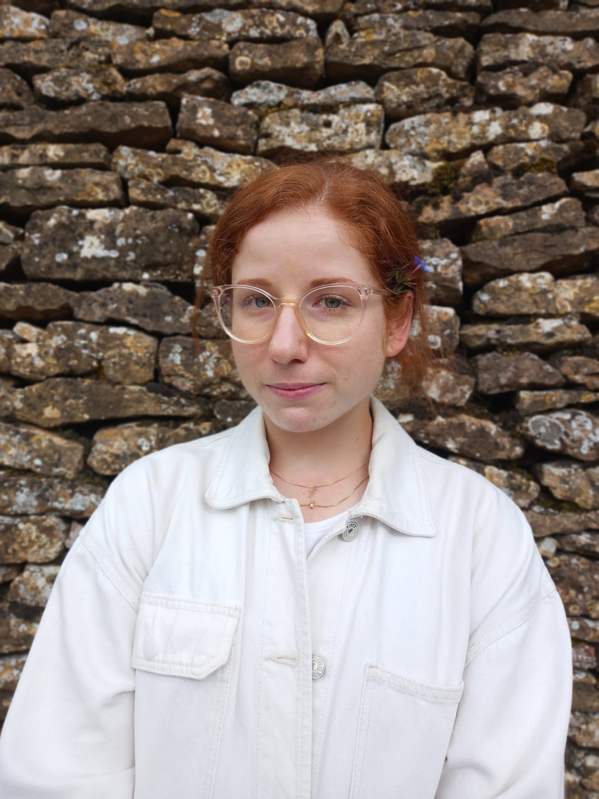Tom, dokonalá kombinace mozku vědce propleteného s chaosem umělce, doktorand fyziky plazmatu a velký hudebník – zahraje na klavír o cokoliv ho poprosíte. Je to velký organizátor (ano, i této svatby). Doprovází Studentskou jezuitskou scholu v Brně, spoluorganizuje modlitby Taizé v Brně, na kterých hraje i zpívá, nadšený cyklista, lyžařský instruktor, ex-nohejbalista a člověk, který vždy vidí druhého před sebou samým, neúnavně šíří pokoj a radost.
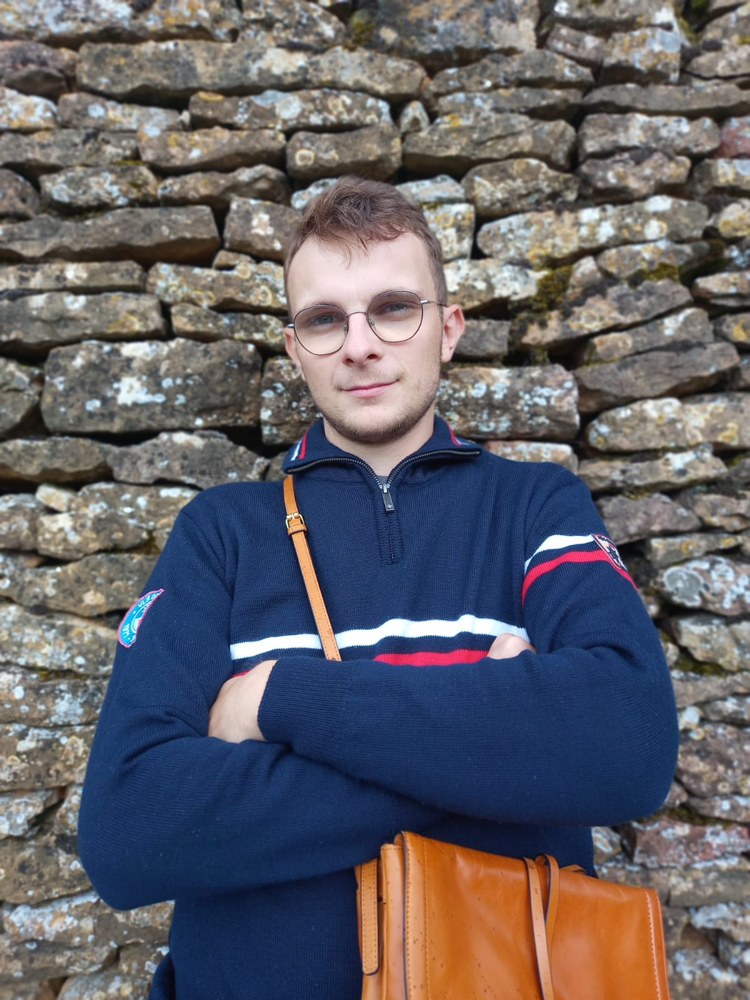No a jak to vlastně celé začalo? Podivuhodně a krásně. Oba jsme hledali Boha a chtěli jsme se mu přiblížit. Proto jsme se na podzim roku 2023 oba objevili na přípravách k biřmování v Brně. Jak to bylo dál? Ani nejmoudřejší tohoto světa nedovedou najít odpověď na otázku, jak vlastně přichází do srdcí dívek a mladenců láska, a tak ani my nevíme. Ve vzájemné přítomnosti nám spolu bylo prostě jen dobře. Aniž bychom vyvíjeli jakoukoliv snahu, v našich srdcích rostlo něco, čemu dodnes nerozumíme. Tváří v tvář všem společným pocitům, postojům a zálibám jsme si vzájemně uvědomili zázrak toho, že někdo takový vůbec chodí po tomto světě. No a tak to přišlo, jednoho předvánočního večera na Kraví hoře v Brně Tomáš Aničce naznačil, že to celé asi nebude náhoda, a že bychom možná mohli zkusit životem putovat spolu. Anička po pár dnech rozhodování na Štědrý den souhlasila. Naše výročí se tedy bude dobře pamatovat.
Společně jsme toho poté prožili mnoho, možná až příspříliš na tak krátký čas. S úsměvem na tváři a láskou v srdci jsme se učili zvládat dokonale nedokonalé momenty, zejména když přišlo na krájení koláče nebo plánování harmonogramu dne. Na druhou stranu, neocenitelními parťáky jsme si vždy v divných věcech, jako byl například brzký ranní pochod zasněženou krajinou do Neratova nebo běh v dešti v Jeseníkách.
No a protože únava z nového vztahu Aničku už po měsíci zmohla, rozhodla se jet si odpočinout do iráckého Kurdistánu na měsíční lékařskou stáž. Byly to týdny, které nás naučily přijímat a zvládat strach, být pevnými v důvěře a ve velké vděčnosti přijímat společně strávený čas. Následné setkání na půli cesty v Istanbulu bylo jedním z nejemotivnějších momentů.
V létě se zase Anička vydala vstříc Tomovi a strávila měsíc a půl v jesenické nemocnici. Pracovní, ale i horské zážitky nám dali poznat, jak vypadá (ne)obyčejný život fyzika a medičky.
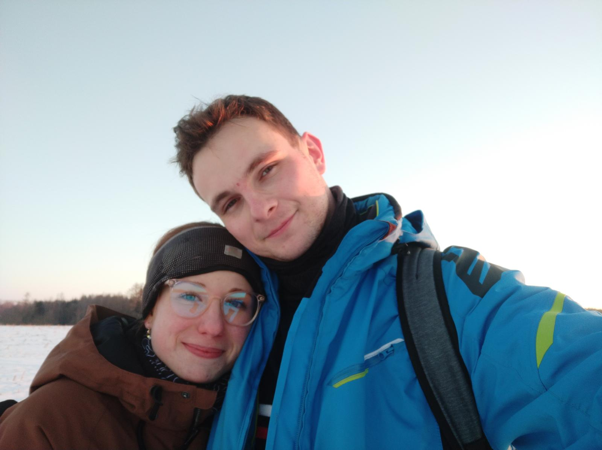 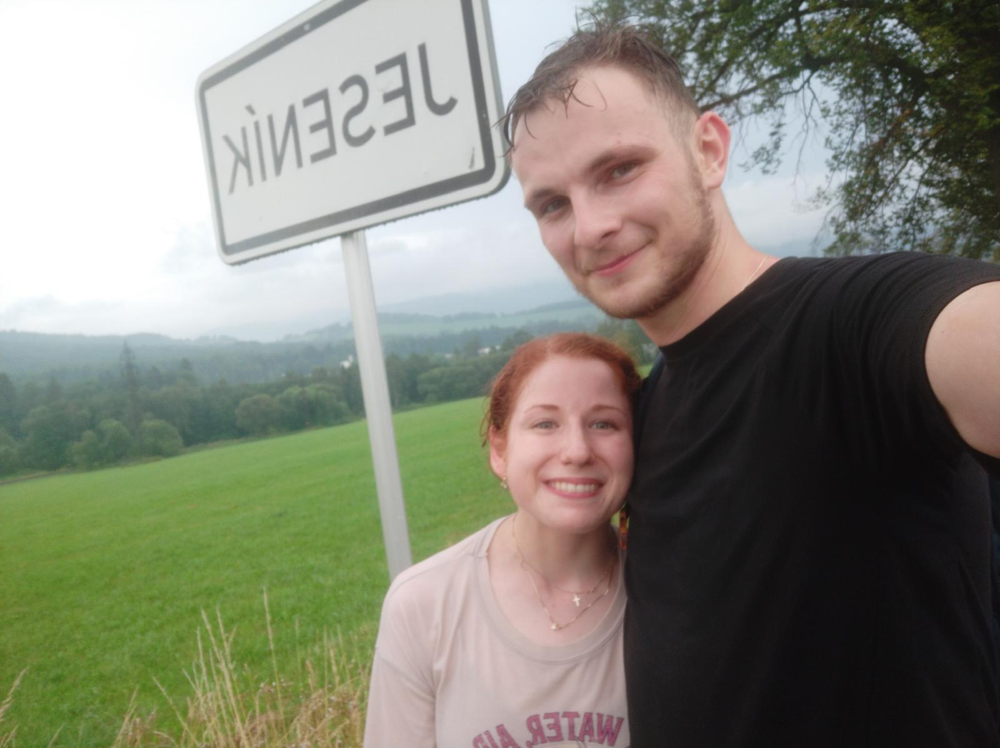Vzájemné trpělivosti, toleranci a přijímání sebe navzájem v nepohodě jsem se učili také na 11denním putování po pohoří Prokletje na hranicích Černé Hory, Albánie a Kosova. V Taizé, malé francouzské vesničce, jsme našli pokoj v jednoduchosti spolu s křesťanským ekumenickým společenstvím bratří v Taizé, které láká návštěvníky z celého světa. My jsme se tam starali 24 hodin denně o skupinu hendikepovaných. Prožívali jsme tam nezávisle na sobě i první momenty volání do manželství. No a potom to přišlo, 2. 1. 2025, vichřice na Královej holi, Anička něco tušila, Tom absolutně netušil, že Anička tuší, ale oba jsme byli rozhodnuti pro totéž.
A to jsme my. Víckrát prozkoušeni dálkou, nepohodlím fyzickým i psychickým jsme si uvědomili, že spolu se nám kráčí snáze. Věříme, že jsme se změnili, zformovali v lepší, chápavější, milující, změnili v sebe autentičtější. Těšíme se, že už co nevidět budeme moci ve velké vděčnosti a pokoře vyznat, že se navzájem potřebujeme a pokračovat spolu nadále slunci vstříc. Děkujeme, že při tom budete s námi.
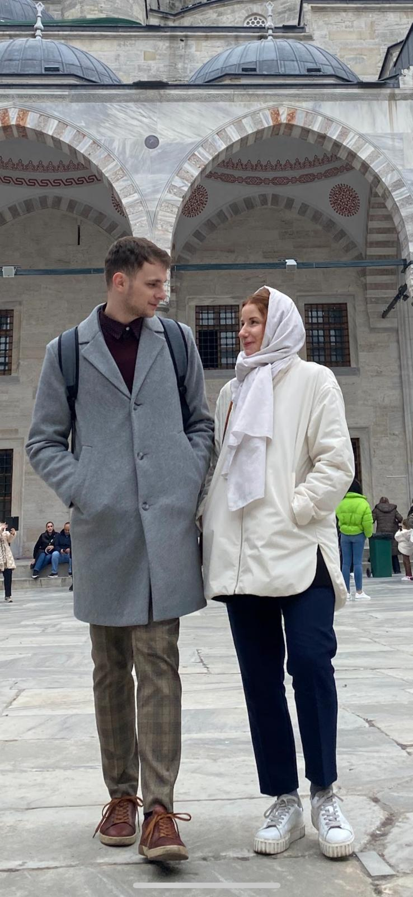 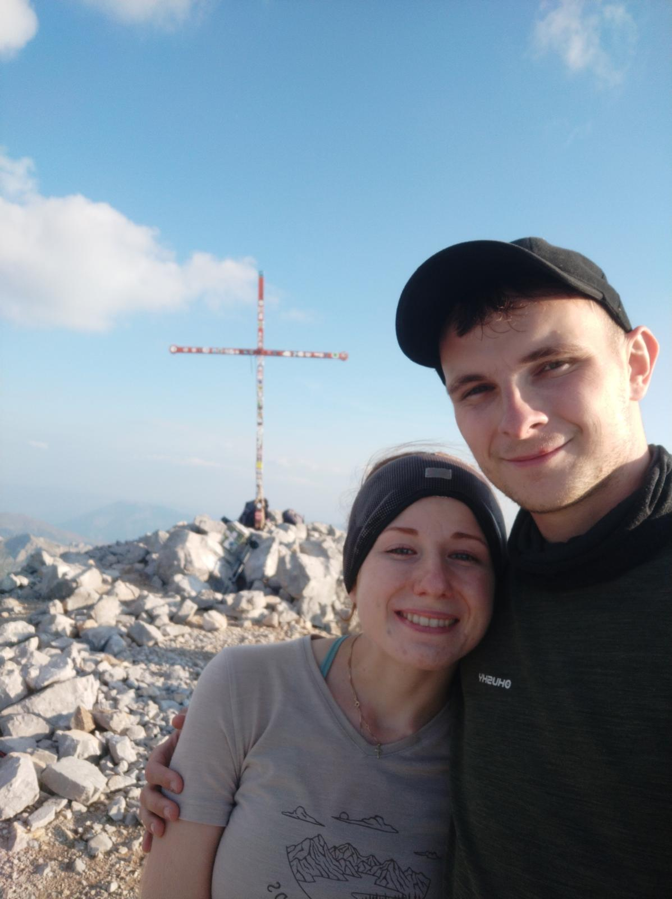 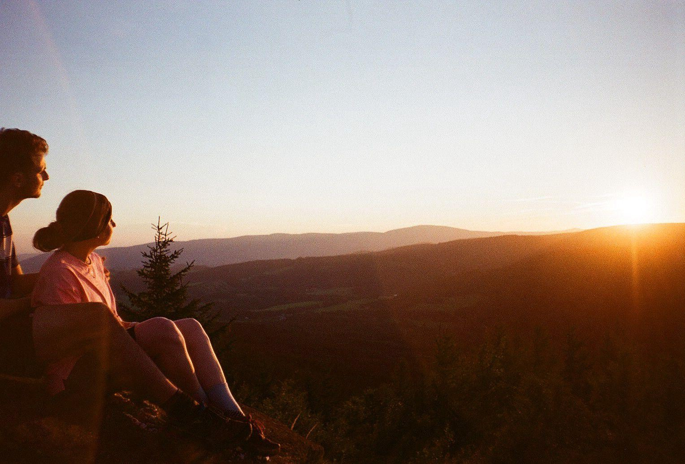